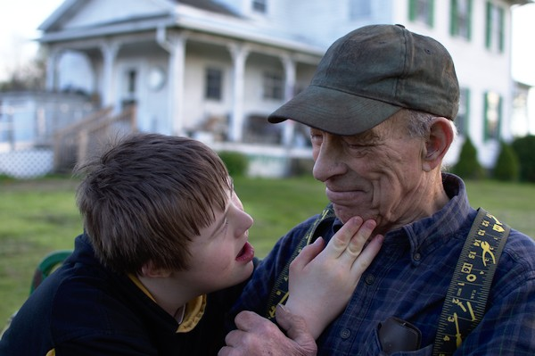
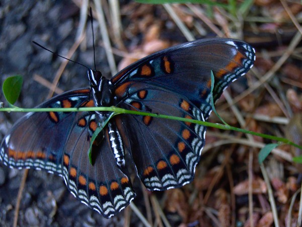
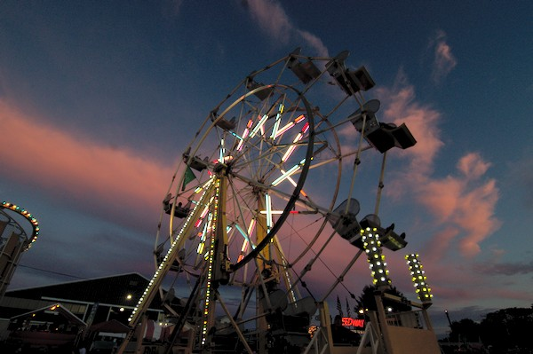
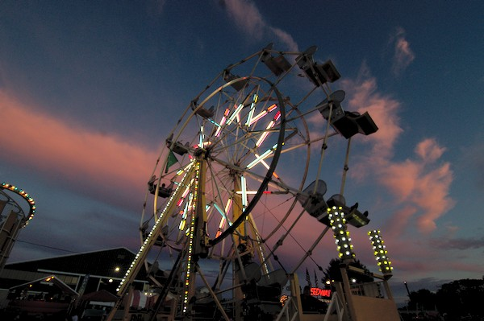
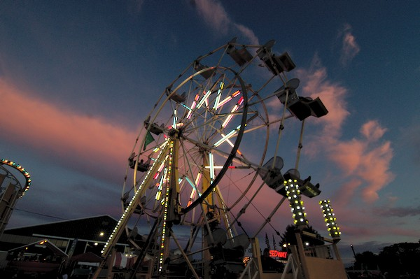

Programmer. Photographer. Artist. She/They.
Maya Nordland is a full stack web developer and photographer. They enjoy works of literature and art that inspire a sense of wonder and provide facinating worlds to explore. Some of her hobbies include learning math, pen and paper RPGs and video games.
Silliness is good, and so are dragons.
While you're here, why not offer me a job?



 

